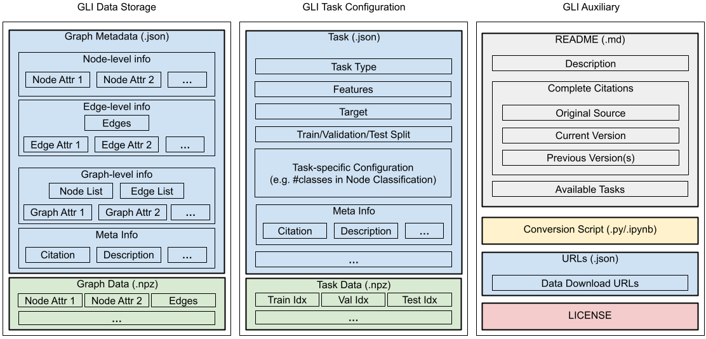

GLI Data and Task File Formats
{kind=link}
Overview
The GLI file format is designed to be a unified file format for storing graph learning datasets, allowing a general data loading scheme through GLI. The figure on the top gives an overview of the GLI file structure.
This section illustrates the GLI file structure through three components:
Note
GLI provides a rich list of templates for these files. See https://github.com/Graph-Learning-Benchmarks/gli/tree/main/templates for more details.
In brief, GLI Data Storage stores all the necessary information to construct a graph. GLI Task Configuration stores the task-specific information, and may have multiple variants defined on one graph. GLI Auxiliary stores the auxiliary information about the graph dataset, such as the license.
In addition, GLI further compress big chunks of data (such as the attributes or edge list) into NumPy standard binary format (.npz file, green box in the figure), with indexes to these data stored in JSON files (blue box in the figure).
Numpy Standard Binary Format (.npz)
The .npz format is the standard format for persisting multiple NumPy
arrays on disk. A .npz file is a zip file containing multiple .npy
files, one for each array. In GLI, we use file and key to jointly
index a Tensor/SparseTensor.
GLI Data Storage
The metadata of the graph dataset should be stored in a file named as metadata.json, which contains the pointers to various npz files storing the actual data. There are four required fields in metadata.json.
description: A short description of the dataset, typically the dataset name.data: The graph objects as well as their attributes, see Objects and Attributes.citation: The bibtex of the original dataset.is_heterogeneous: A boolean value that indicates the graph heterogeneity.
Since GLI is designed to separate tasks from graph data, this file should not contain any information regarding task configuration, e.g., negative edges in link prediction tasks.
Graph Representation
We define a graph as \(G=(V, E)\), where \(V\) is a set of nodes (\(1,2,\dots,|V|\)) and \(E\) is a set of edges, each of which \(e=(v_i,v_j)\) is an ordered tuple.
Each node and edge can be associated with multiple attributes of different forms (scalar, vector, string, etc) that may serve as the features or targets in a graph learning task. Mathematically, for a \(d\)-dimension node attribute, one can represent them by a \(|V|\times d\) matrix \(X_V\), and for a \(d\)-dimension edge attribute, one can represent them by a \(|E|\times d\) matrix \(X_E\).
It is common to divide the graph into multiple subgraphs. To divide a large graph \(G\) into \(N\) node-induced subgraphs, we may use a binary \(N\times |V|\) matrix \(S_V\) to represent the subgraphs, where \(S_{Vij}=1\) if node \(j\) belongs to subgraph \(i\), and \(S_{Vij}=0\) otherwise. Alternatively, we can divide \(G\) into \(N\) edge-induced subgraphs by a \(N\times |E|\) matrix \(S_E\) in an analogous way. Additionally, each subgraph may be associated with multiple attributes just like node and edge attributes by a matrix \(X_S\).
Objects and Attributes
GLI represents a graph through three levels/objects with attributes: Node,
Edge, and Graph. They are stored under the data field in
metadata.json For each object, one can define multiple attributes that
associated with it. There are three reserved attributes: _Edge,
_NodeList, and _EdgeList that stores the essential info about graph
structure. Except for them, users are free to define any extra ones. The
following table summarizes the three levels and the three reserved attributes:
Objects |
Information |
Predefined attributes |
Node |
\(X_V\) |
N/A |
Edge |
\(E\), \(X_E\) |
|
Graph |
\(A_V\), \(A_E\), \(X_S\) |
|
Reserved Attributes Format
_Edge(required): ATensorin shape (n_edges, 2)._Edge[i]stores the i-th edge in the form of (src_node_id, dst_node_id). Notice that nodes indices are zero-based. i.e., node ID starts from 0._NodeList(required): A 0/1-valuedTensor/SparseTensor in shape (n_graphs, n_nodes)._EdgeList(optional): A 0/1-valuedTensor/SparseTensor in shape (n_graphs, n_edges). This attribute is optional when the_EdgeListof each subgraph can be inferred from_NodeList.
For any user-defined attribute, one needs to specify these five fields:
description: A short description of the attribute.type: The type of the attribute. Currently, GLI supportsint,floatandstring.format: The storing format of the attribute. Currently, GLI supportsTensorandSparseTensor.file: The name of the npz file storing the attribute.key: The key in the npz file that maps to the attribute.
For predefined attributes (e.g. _NodeList), one only needs to specify two fields:
file: The name of the npz file storing the attribute.key: The key in the npz file that maps to the attribute.
Warning
Only csr and coo format are stably supported for SparseTensor in GLI.
Note
GLI provides a utility function gli.utils.save_data() to help
contributors store attributes data conveniently. Contributors are encouraged
to use this function to store their data rather than storing mannually with
Numpy.
Example (Homogeneous Graph)
Here is a minimal example of metadata.json of the famous CORA dataset.
{
"description": "CORA dataset.",
"data": {
"Node": {
"NodeFeature": {
"description": "Node features of Cora dataset, 1/0-valued vectors.",
"type": "int",
"format": "SparseTensor",
"file": "cora_node_feats.sparse.npz"
},
"NodeLabel": {
"description": "Node labels of Cora dataset, int ranged from 1 to 7.",
"type": "int",
"format": "Tensor",
"file": "cora.npz",
"key": "node_class"
}
},
"Edge": {
"_Edge": {
"file": "cora.npz",
"key": "edge"
}
},
"Graph": {
"_NodeList": {
"file": "cora.npz",
"key": "node_list"
}
}
},
"citation": "@inproceedings{yang2016revisiting,\ntitle={Revisiting
semi-supervised learning with graph embeddings},\nauthor={Yang, Zhilin
and Cohen, William and Salakhudinov, Ruslan},\nbooktitle={International
conference on machine
learning},\npages={40--48},\nyear={2016},\norganization={PMLR}\n}",
"is_heterogeneous": false
}
Heterogeneous Graph
Heterogeneous graph has multiple kinds of nodes and edges. For a heterograph,
Node and Edge are dictionaries that map node/edge group name to its
attributes. In addition to the required attributes that homogeneous graph needs,
metadata of a heterogeneous graph requires these attributes:
Node
_ID: The unique indices for all nodes.Edge
_ID: The unique indices for all edges.
Both _ID should follow zero-based indexing.
Example (Heterogeneous Graph)
Here is a complete example of heterograph’s metadata.json.
{
"description": "OGBN-MAG dataset.",
"data": {
"Node": {
"PaperNode": {
"_ID": {
"file": "ogbn-mag.npz",
"key": "PaperNode_id"
},
"PaperFeature": {
"description": "Node features of ogbn-mag dataset.",
"type": "float",
"format": "Tensor",
"file": "ogbn-mag.npz",
"key": "paper_feats"
},
"PaperLabel": {
"description": "Node labels of ogbn-mag dataset, int ranged from 1 to 40.",
"type": "int",
"format": "Tensor",
"file": "ogbn-mag.npz",
"key": "paper_class"
},
"PaperYear": {
"description": "Year of the article represented by the Node",
"type": "int",
"format": "Tensor",
"file": "ogbn-mag.npz",
"key": "paper_year"
}
},
"AuthorNode": {
"_ID": {
"file": "ogbn-mag.npz",
"key": "AuthorNode_id"
}
},
"InstitutionNode": {
"_ID": {
"file": "ogbn-mag.npz",
"key": "InstitutionNode_id"
}
},
"FieldOfStudyNode": {
"_ID": {
"file": "ogbn-mag.npz",
"key": "FieldOfStudyNode_id"
}
}
},
"Edge": {
"Author_affiliated_with_Institution": {
"_ID": {
"file": "ogbn-mag.npz",
"key": "author_institution_id"
},
"_Edge": {
"file": "ogbn-mag.npz",
"key": "author_institution_edge"
}
},
"Author_writes_Paper": {
"_ID": {
"file": "ogbn-mag.npz",
"key": "author_paper_id"
},
"_Edge": {
"file": "ogbn-mag.npz",
"key": "author_paper_edge"
}
},
"Paper_cites_Paper": {
"_ID": {
"file": "ogbn-mag.npz",
"key": "paper_paper_id"
},
"_Edge": {
"file": "ogbn-mag.npz",
"key": "paper_paper_edge"
}
},
"Paper_has_topic_FieldOfStudy": {
"_ID": {
"file": "ogbn-mag.npz",
"key": "paper_FieldOfStudy_id"
},
"_Edge": {
"file": "ogbn-mag.npz",
"key": "paper_FieldOfStudy_edge"
}
}
},
"Graph": {
"_NodeList": {
"file": "ogbn-mag.npz",
"key": "node_list"
},
"_EdgeList": {
"file": "ogbn-mag.npz",
"key": "edge_list"
}
}
},
"citation": "@inproceedings{wang2020microsoft,\ntitle={Microsoft
academic graph: When experts are not enough},\nauthor={Wang, Kuansan and
Shen, Zhihong and Huang, Chiyuan and Wu, Chieh-Han and Dong, Yuxiao and
Kanakia, Anshul},\nbooktitle={Quantitative Science
Studies},\npages={396--413},\nyear={2020}\n}",
"is_heterogeneous": true
}
Note
See https://github.com/Graph-Learning-Benchmarks/gli/tree/main/datasets for a list of available examples.
GLI Task Configuration
The information about a graph learning task (e.g., the train/test splits or the prediction target) should be stored in a task configuration file named as task_<task_type>.json. There could be multiple different tasks for a single graph dataset, such as node classification and link prediction. Node classification with different data split can also be viewed as different tasks. There are four required fields in a task_<task_type>.json:
description: A short description of the task.type: The type of the task. A list of supported tasks is available at gli.task.feature: The attributes that used as features in the graph learning task.target: The attribute that used as the prediction target in the graph learning task.
Supported Tasks
See gli.task.
Dataset Split
There are two ways to specify the dataset split for a task: random split and predefined split.
Example (Node Classification)
{
"description": "Node classification on CORA dataset. Planetoid split.",
"type": "NodeClassification",
"feature": [
"Node/NodeFeature"
],
"target": "Node/NodeLabel",
"num_classes": 7,
"train_set": {
"file": "cora_task.npz",
"key": "train"
},
"val_set": {
"file": "cora_task.npz",
"key": "val"
},
"test_set": {
"file": "cora_task.npz",
"key": "test"
}
}
GLI Auxiliary
GLI auxiliary files do not directly contribute to the dataloading process. Instead, they contain extra information about the dataset, such as the citation of the dataset, the license of the dataset, or the conversion script that transform the raw data into GLI format.
Documentation (README.md)
A document that contains the necessary information about the dataset and task(s), including description, citation(s), available task(s), and extra required packages for the conversion script. See Citation and License for citation formats.
Conversion Script (<dataset_name>.ipynb/.py)
A jupyter notebook or python script to convert the raw data into GLI format.
License
A license file used by the current version of the dataset.
Download Link (urls.json)
A json file that contains the download links of npz files. The key of the json file is the name of the npz file, and the value is the download link.